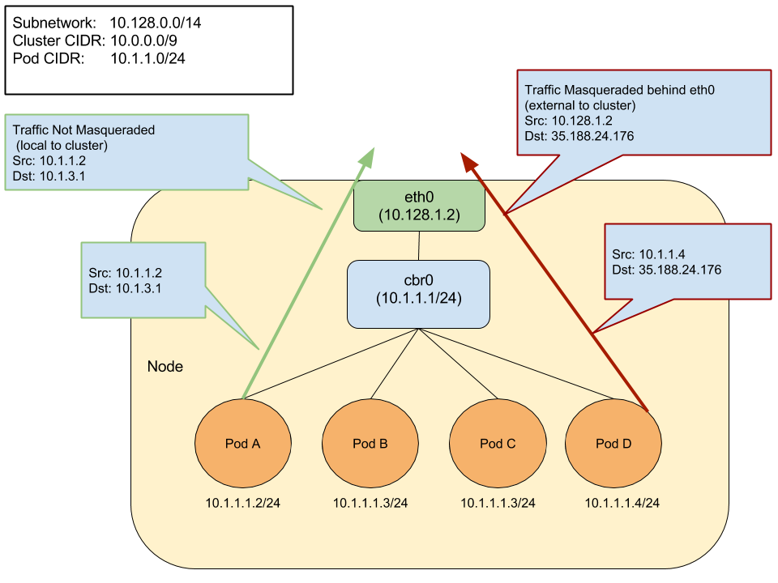

IP 伪装代理
接下来将讲述如何配置和启用 ip-masq-agent
关于 ip-masq-agent 的更多信息请参考 https://github.com/kubernetes-incubator/ip-masq-agent
创建
要创建 ip-masq-agent，运行下面的 kubectl 命令：
$ kubectl create -f https://raw.githubusercontent.com/kubernetes-incubator/ip-masq-agent/master/ip-masq-agent.yaml
在大多数情况下，默认的一套规则应该是足够的，但是，如果内置的规则不适用于集群，可以创建并应用 ConfigMap 来自定义受影响的 IP 范围
例如，为了仅允许 ip-masq-agent 考虑 10.0.0.0/8，可以在名为 “config” 的文件中创建以下 ConfigMap 注意：重要的是，该文件被命名为 config，因为默认情况下，该文件将被用作 ip-masq-agent 查找的关键字
nonMasqueradeCIDRs: - 10.0.0.0/8 resyncInterval: 60s
运行下列命令将 ConfigMap 添加到集群中：
$ kubectl create configmap ip-masq-agent --from-file=config --namespace=kube-system
这将会更新 /etc/config/ip-masq-agent 文件，并每隔 resyscInterval 时间段检查一遍该文件，将配置应用到集群的节点中：
$ iptables -t nat -L IP-MASQ-AGENT Chain IP-MASQ-AGENT (1 references) target prot opt source destination RETURN all -- anywhere 169.254.0.0/16 /* ip-masq-agent: cluster-local traffic should not be subject to MASQUERADE */ ADDRTYPE match dst-type !LOCAL RETURN all -- anywhere 10.0.0.0/8 /* ip-masq-agent: cluster-local MASQUERADE all -- anywhere anywhere /* ip-masq-agent: outbound traffic should be subject to MASQUERADE (this match must come after cluster-local CIDR matches) */ ADDRTYPE match dst-type !LOCAL
默认情况下，本地链路范围（169.254.0.0/16）也由 ip-masq 代理处理，该代理设置相应的 iptables 规则
想要让 ip-masq-agent 忽略本地链路，可以在 ConfigMap 中将 masqLinkLocal 设置为 true
nonMasqueradeCIDRs: - 10.0.0.0/8 resyncInterval: 60s masqLinkLocal: true
原理
ip-masq-agent 用户配置 iptables 规则将 Pod 的 IP 地址隐藏在集群 node 节点的 IP 地址后面
这通常在将流量发送到群集的 pod CIDR 范围之外的目的地时执行
术语
NAT（网络地址转换）：是一种通过修改 IP 头中的源和/或目标地址信息来将一个 IP 地址重映射到另一个 IP 地址的方法
通常由执行 IP 路由的设备完成
Masquerading（伪装）：NAT 的一种形式，通常用于执行多个地址转换，其中多个源 IP 地址被掩盖在单个地址之后
通常是由某设备进行 IP 路由。在 kubernetes 中，这是 Node 的 IP 地址
CIDR（无类域内路由选择）：基于可变长度子网掩码，允许指定任意长度的前缀
CIDR 引入了一种新的 IP 地址表示方法，现在通常被称为 CIDR 表示法，将地址或路由前缀的比特位数作为后缀。例如 192.168.2.0/24
本地链路：本地链路地址是仅能在主机连接的网段或广播域内进行有效通信的网络地址
IPv4 的链路本地地址在 CIDR 表示法定义的地址块是 169.254.0.0/16
过程
Ip-masq-agent 在将流量发送到集群 node 节点的 IP 和 Cluster IP 范围之外的目的地时，会配置 iptables 规则来处理伪装的 node/pod IP 地址。这基本上将 pod 的 IP 地址隐藏在了集群 node 节点的 IP 地址后面
在某些环境中，到 “外部” 地址的流量必须来自已知的机器地址 例如，在 Google Cloud 中，到互联网的任何流量必须来自虚拟机的 IP。当使用容器时，如在GKE中，Pod IP 将被拒绝作为出口
为了避免这种情况，必须将 Pod IP 隐藏在 VM 自己的 IP 地址之后：通常被称为 “伪装”
默认情况下，配置代理将 RFC 1918指定的三个专用 IP 范围视为非伪装 CIDR，范围包括 10.0.0.0/8、172.16.0.0/12 和 192.168.0.0/16 默认情况下，代理还将本地链路（169.254.0.0/16）视为非伪装 CIDR
配置
代理配置为每隔60秒从 /etc/config/ip-masq-agent 位置重新加载其配置，这也是可配置的。代理的配置文件必须使用 yaml 或 json 语法，并且包含以下三个可选的 key：
- nonMasqueradeCIDRs: 使用 CIDR 表示法指定的非伪装范围的字符串列表
- masqLinkLocal: 一个布尔值（true/false），表示是否将流量伪装成本地链路前缀 169.254.0.0/16。默认为false
resyncInterval: 代理尝试从磁盘重新加载配置的时间间隔
例如 ’30s’ 其中 ‘s’ 是秒，’ms’ 是毫秒等…
到 10.0.0.0/8、172.16.0.0/12 和 192.168.0.0/16 范围的流量将不会被伪装。任何其他流量（假定是互联网）将被伪装

图中来自 pod 的本地目的地址可以是其节点的 IP 地址、其他节点的地址或 Cluster IP 范围中的一个 IP 地址。其他任何流量都将默认伪装
以下条目显示 ip-masq-agent 应用的默认规则集：
$ iptables -t nat -L IP-MASQ-AGENT RETURN all -- anywhere 169.254.0.0/16 /* ip-masq-agent: cluster-local traffic should not be subject to MASQUERADE */ ADDRTYPE match dst-type !LOCAL RETURN all -- anywhere 10.0.0.0/8 /* ip-masq-agent: cluster-local traffic should not be subject to MASQUERADE */ ADDRTYPE match dst-type !LOCAL RETURN all -- anywhere 172.16.0.0/12 /* ip-masq-agent: cluster-local traffic should not be subject to MASQUERADE */ ADDRTYPE match dst-type !LOCAL RETURN all -- anywhere 192.168.0.0/16 /* ip-masq-agent: cluster-local traffic should not be subject to MASQUERADE */ ADDRTYPE match dst-type !LOCAL MASQUERADE all -- anywhere anywhere /* ip-masq-agent: outbound traffic should be subject to MASQUERADE (this match must come after cluster-local CIDR matches) */ ADDRTYPE match dst-type !LOCAL
默认情况下，在 GCE/GKE 中将启动 kubernetes 后，ip-masq-agent 已经在集群中运行 如果在其他环境中运行 kubernetes，那么可以将 ip-masq-agent 以 DaemonSet 的方式在集群中运行
| Next：身份认证 | Previous: Kubeconfig | Home：安全 |